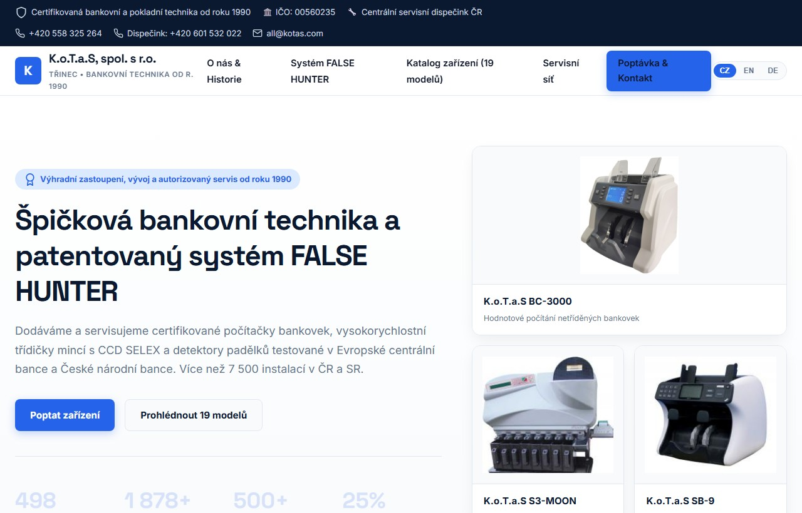
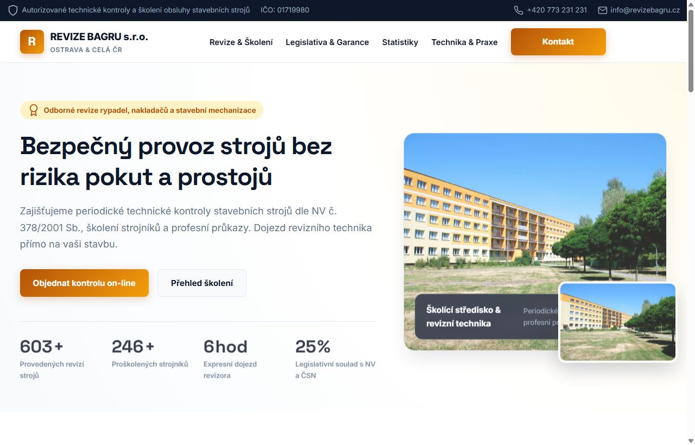
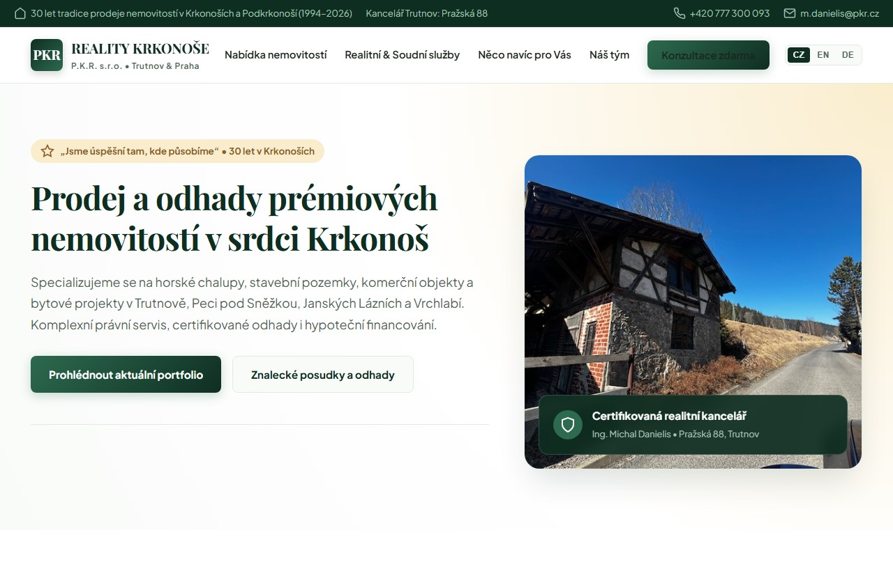
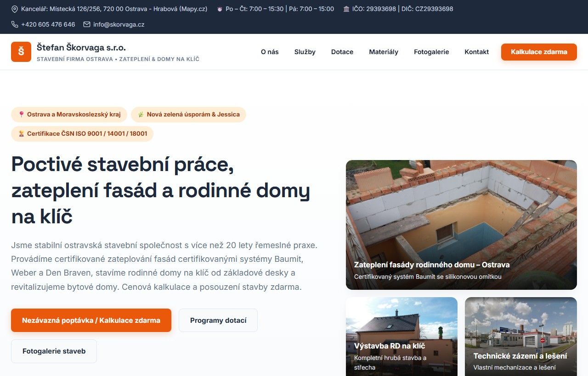
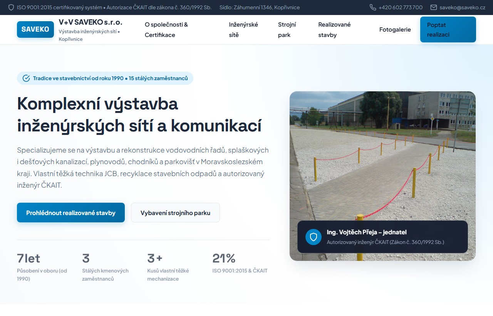

Hotové, 100% responzivní webové prezentace s reálnými daty, fotografiemi, animacemi a přímým srovnáním s původním webem firmy.

Bankovní & pokladní technika CZ | EN | DE
Revize & školení mechanizace
Prémiové horské reality CZ | EN | DE
Zateplení, fasády & domy
Inženýrské sítě & infrastruktura